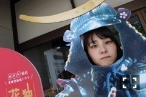
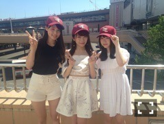
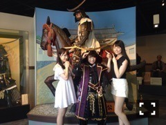
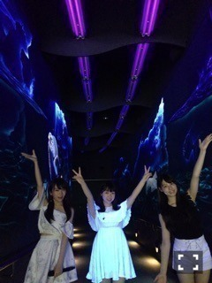
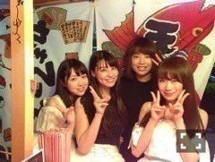
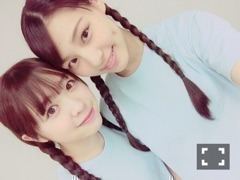
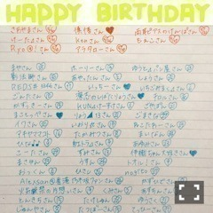

| 2016/06 13 Mon | 肩を出すのは～？ _(．．*)vol.93 |
みなさんこんばんはー！
相楽伊織です！

46時間テレビ
終わりましたーーーヾ(＠⌒ー⌒＠)ノ
ひゃーー
今回は始まってすぐに
コールセンターで
お手伝いさせて頂きました！
電話自体久しぶりすぎて
ちょっとテンパっちゃったんですけど
ファンの方と電話でお話するという
貴重な経験が出来たので
とても楽しかったです♪♪
アルバムを買って頂いた皆さま
ありがとうございましたm(_ _)m
そして2日目は
さゆりんご軍団と対決すべく
新しく結成された
｢真夏さんリスペクト軍団｣で
仙台と福岡に行ってきました！！

仙台では
市場で海鮮を食べたり
｢伊達政宗歴史館｣に行って
真夏さんが伊達政宗に変身したり
カフェで戦国パフェを食べたりしました♪♪

それから飛行機で福岡へ(^-^)/
福岡では
まず水族館に行ってきました！！

前から水族館行きたかったので
とても楽しかったです♡
イルカショーで飼育員さんがやってる
サインを教えて頂いて
実際にやったら
ちゃんと私たちのサインにも反応してくれて
歌ったりクルクル回ったり
ジャンプしたりしてくれました♡
最後にイルカちゃんに
触らせてもらえたんですけど、
その時もじーっとしてて
すごく可愛かった(｡> <｡)♡
みり愛も1番テンション上がってた♡
そして
最後は
屋台｢かじしか｣さんで
人気の串焼きとラーメンを食べました！

屋台の大将と↑
女将ではなく大将だそうです♡
｢ぶどうベーコン巻き｣
すごい美味しかった(^^)
とんこつラーメンも
すりゴマと紅しょうがを入れて
食べたんですけど、
あっさりしてて美味しかったです♪♪
帰りになんと！！
｢ラーメン永久無料カード｣を
頂いちゃいました♡
また博多に行ったら食べたいなぁ(^o^)/
勝敗は
1勝1敗で引き分けでしたが、
それぞれの魅力が
たくさん伝わったかなと思います♡
これから全国ツアーが始まるので
その際は是非、
今回のロケで紹介した所に
行ってみてください♪♪
仙台、博多のロケで
お世話になった皆様
本当にありがとうございましたm(_ _)m
そしてガチ歌合戦は
みり愛と一緒に
PUFFYさんの｢渚にまつわるエトセトラ｣を
歌いました♪♪
音程が難しくて
あまり上手く歌えなかったけど
サビの振り付けを
みんなもやってくれて
歌ってて楽しかったです★
赤チームは負けちゃいましたが、
またガチ歌合戦企画があれば
やりたいなぁと思います！

そして東京に帰ってきた
次の日は
二期生生誕祭や
乃木坂電視台に出て、
スタジオにも参加出来ました！
と、こんな感じで
バタバタしてたけど、
今回は全員でエンディングを
迎えられて良かったし、
長かったけど
あっという間の46時間でした！
楽しかったぁヾ(＠⌒ー⌒＠)ノ
唯一悔やまれるのは
ラフレクランさんと
またまたすれ違いになってしまったこと
メンバーに話聞いたら
｢面白かったよー｣って言ってたし、
また機会があれば次こそは、、(__)
46時間TVを支えて下さった
スタッフの皆さん
本当に
ありがとうございましたm(_ _)m
お誕生日おめでとうございます♡
オレンジが5月の方
遅くなってすみません(*_*)
水色が6月のお誕生日の方です！
書き漏れなどがあったら
また教えて下さい(__)

素敵な1年になりますように...♡
 楽天SHOWTIME 乃木坂ゴルフ倶楽部
楽天SHOWTIME 乃木坂ゴルフ倶楽部
お時間ある時に
是非見てください(^^♪
 乃木坂46の｢の｣
乃木坂46の｢の｣
遂に！！
遂にーー！！
初めて出させて頂きます＞＜
絶対絶対聴いてくださいね♡
 NOGIBINGO！6 火曜 1:29~
GREEN GORAvol.3 6/16 発売
NOGIBINGO！6 火曜 1:29~
GREEN GORAvol.3 6/16 発売
よろしくお願いしますm(_ _)m
i o r i .

コメント(264)
2016/06/13 22:48